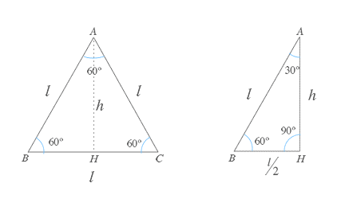
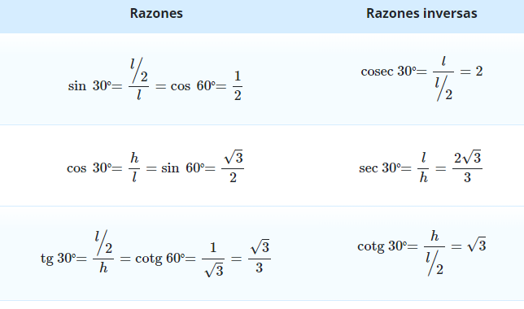
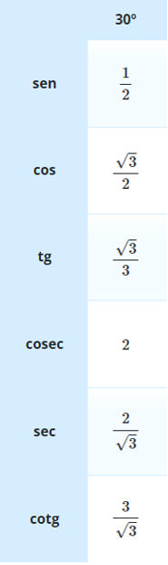

Ángulos notable de 30 grados
En ocasiones para crear los triángulos se deben realizar bastantes operaciones.
Sin embargo, existen ángulos en las cuales son un poco más sencillo; a estos ángulos se les conoce como ángulos notables.
Los ángulos notables son aquellos que tienen valores que aparecen seguido en
la vida cotidiana: estos ángulos son los de 30°, 45° y 60° en donde se pueden encontrar
las razones trigonométricas (seno, coseno, tangente, cotangente, secante y cosecante)
sin conocer las medidas exactas de los triángulos que los contienen y también estos ángulos poseen los mismos valores.
Antes de encontrar el valor para las funciones trigonométricas de los
angulos notables de 30°, vamos a originar dichos ángulos a partir de un triángulo equilátero,
este se formarán dos triángulos a partir de su altura. Estos nuevos triángulos
estarán compuestos por un ángulo de 30°.
A partir de los valores de las funciones trigonométricas de los ángulos notables
podemos obtener también los valores para funciones que representan los múltiplos de dichos ángulos.
Ejemplo
Ahora un pequeño ejemplo.
Si tenemos un triángulo equilátero ABC, que como recordarás tiene todos sus lados (l) y
sus ángulos iguales (60°), y lo dividimos por la mitad obtendremos dos triángulos rectángulos.

Al dividir por su altura un triángulo equilátero ABC como el de la figura obtendremos
un triángulo rectángulo en el que los vértices A y B tendrán 30°

A partir de esta figura y aplicando la definición de seno, coseno y tangente
de cualquier ángulo agudo podemos obtener las razones trigonométricas de los ángulos de 30°

Razones trigonométricas de ángulos notables de 30°
